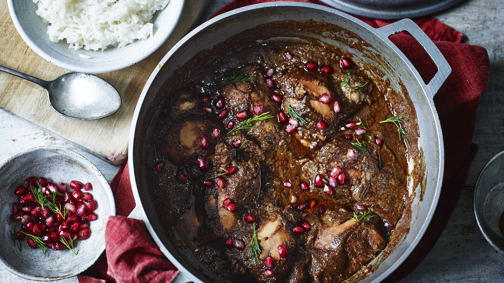

Logan's Fesunjoon

Description
Fesunjoon is a Persian dish comprised of pomegranate molasses, chicken, walnuts, onions, and squash served with jasmine rice and plain yogurt. Additional vegetables or meats may be added in or removed.
Fesunjoon is known for its characteristic sour taste and its ability to be frozen and reheated with ease.
Ingredients
- Chicken
- Olive oil
- Walnuts
- Onions
- Pomegranate Molasses
- Squash
- Jasmine Rice
- Plain Yogurt
Steps
- Add cooking oil to pan, put stovetop to medium-medium high heat, grill onions till brown
- Add walnuts, wait 5-10 minutes till onions are browning and walnut smell fills room, stirring to prevent burning
- Add 2-3 glasses of water, till water level is equal to food (food should not be fully submerged - you should see the top of the walnut/onion/chicken pile. Less water is better than too much water)
- Let come to light boil.
- Add 2 chicken breasts, chopped.
- Wait 20-25 minutes, stirring occassionally.
- Add 2/3 of pomegranate molasses (14fl oz)
- Turn stovetop down to low-medium
- Set timer for 1 hour, stirring occasionally.
- Turn down to low, or simmer, for 1 hour.
- Eat with rice and plain yogurt.